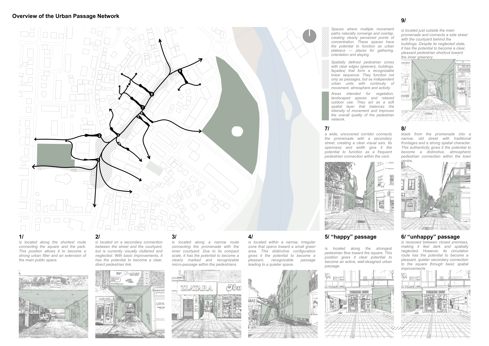
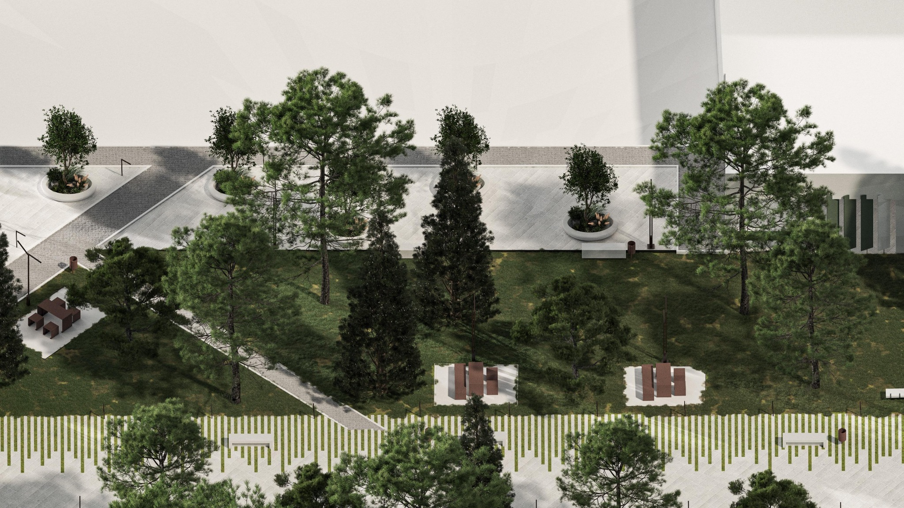
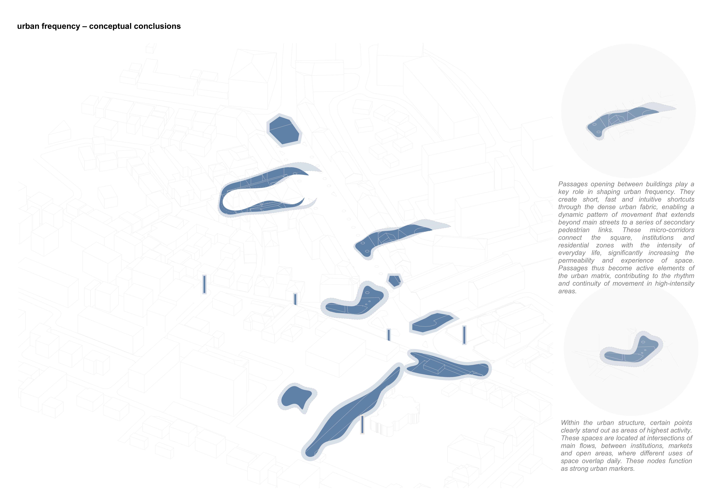
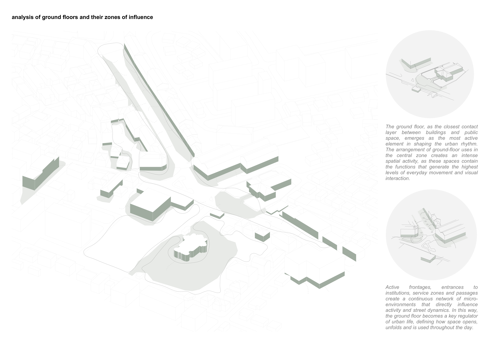
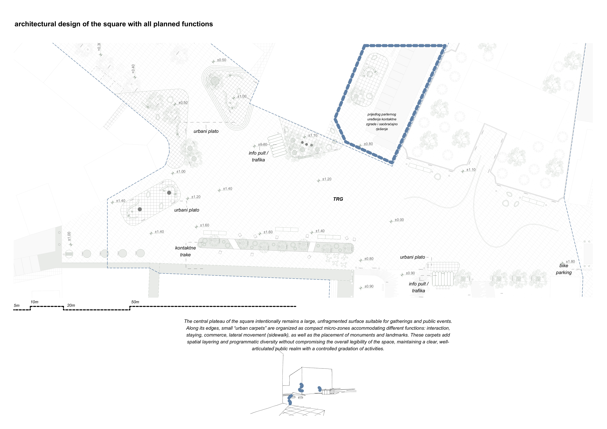
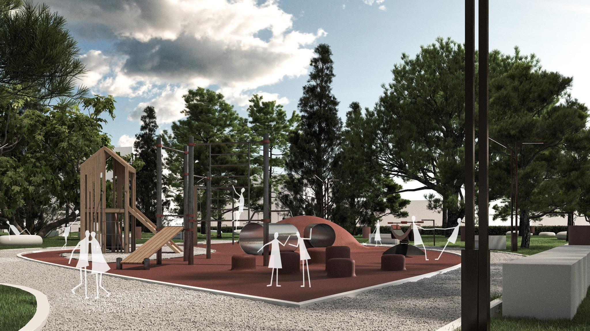

URBAN REGENERATION OF
21 JULY SQUARE
The project proposes the regeneration of Berane’s central public space through the integration of 21 July Square and its surrounding zones into a continuous urban system. The intervention connects the municipal building, city park, the Church of St. Simeon the Myrrh-streaming and the existing promenade, transforming a series of fragmented spaces into a coherent network of public routes and places.
The square becomes a flexible civic plateau for everyday use, gathering and public events, while the park retains its existing natural character through minimal intervention. Together, the square, park, church plateau and promenade establish a continuous sequence of public spaces that strengthens pedestrian movement and reconnects key points within the city centre.


The proposal develops a continuous pedestrian network in which existing passages, active ground floors and public spaces operate as parts of a single urban system. The intervention reinforces existing movement patterns while introducing new spatial connections between the main civic areas.


The central square is conceived as a large, open civic surface. Smaller programmed zones are positioned along its edges, allowing different forms of everyday occupation while preserving the central plateau for gatherings, events and collective use.


The existing promenade is retained as the main linear public connection. Existing trees and movement axes are preserved while passages through the surrounding urban fabric are opened and integrated into the pedestrian network.


The park retains its existing landscape character through minimal intervention. Around the church, the public realm is reorganised as a calm civic and ceremonial space connected directly to the surrounding pedestrian system.




Active frontages, entrances, passages and public programmes are understood as generators of urban activity. Their relationship with the redesigned public realm establishes a sequence of smaller environments operating throughout the day.